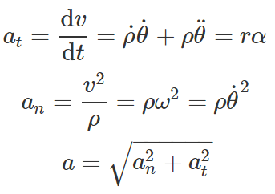
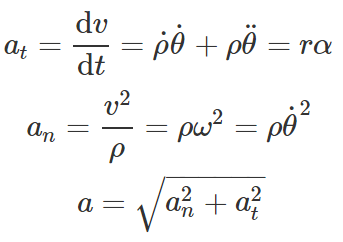

Kinematic Equations (when a = constant):
V = a*t + V0
X = 1
2 a*t2 + V0 t + X0
V 2- V02 = 2a (X-X0)
V = a*t + V0
X = 1
2 a*t2 + V0 t + X0
V 2- V02 = 2a (X-X0)
V: final velocity (Unit: m/2 ft/2)
V0: initial velocity (Unit: m/2 ft/2)
t: time (Unit: sec)
a: acceleration (Unit: m/sec^2 ft/sec^2)
X: final distance (Unit: m)
X0: initial distance (Unit: m)
= / Kinematic Equations (when a = constant): V = a*t 1 2 X + - ( )
Relative motion: aA/B
= aA- aB
a: acceleration (Unit: m/sec^2 ft/sec^2)
= Relative motion: a
Law of consines:

none
Law of consines: c a b cos 2
Law of sines:

none
Law of sines: c a b sin
Equation of trajectory:

none
Equation of trajectory: y x tan - g x v V cos
Normal and tangential coordinate system


none
Normal and tangential coordinate system a ρ θ ω v